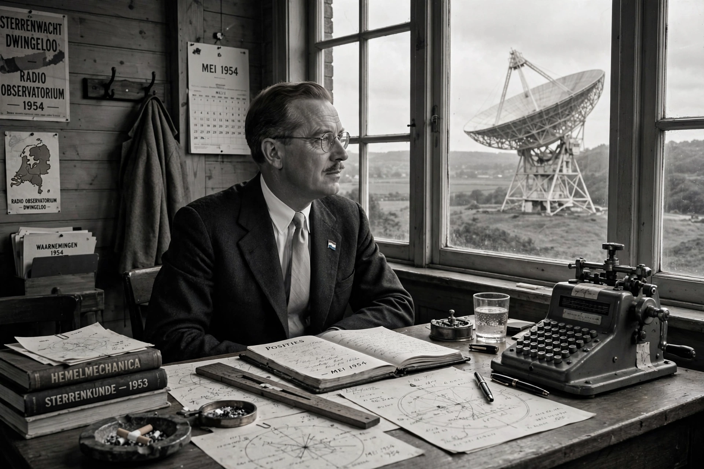

From Wikipedia, the free encyclopedia

| Hendrik C. van de Hulst | |
|---|---|
| Born | 19 November 1918, Utrecht, Netherlands |
| Died | 31 July 2000 (aged 81), Leiden, Netherlands |
| Nationality | Dutch |
| Alma mater | Utrecht University |
| Known for | Prediction of the 21-cm hydrogen line; light scattering theory |
| Awards | Eddington Medal (1955); Henry Draper Medal (1955); Rumford Medal (1964); Bruce Medal (1978) |
| Institutions | Leiden Observatory, Leiden University |
Hendrik Christoffel "Henk" van de Hulst (19 November 1918 – 31 July 2000) was a Dutch astronomer best known for predicting, in 1944, the existence of the 21-centimetre hyperfine emission line of neutral interstellar hydrogen — a discovery that opened the field of radio astronomy to the mapping of the Milky Way galaxy and founded much of modern radio astronomy.
While a student at Utrecht University working under Marcel Minnaert, van de Hulst was asked by Jan Oort to consider whether any spectral line might be observable at radio wavelengths. In 1944 he calculated that neutral hydrogen atoms, when their electron spin flips relative to the proton spin, should emit radiation at a frequency of about 1420 MHz, corresponding to a wavelength of 21 cm. The transition is extremely rare for any single atom, but the enormous quantities of hydrogen in interstellar space make the line detectable. The line was first observed in 1951 by Harold Ewen and Edward Purcell at Harvard, and almost simultaneously by Dutch and Australian groups, confirming van de Hulst's prediction. Because the line is shifted by the Doppler effect, it allows astronomers to measure the rotation of the galaxy and map its spiral structure, as well as to trace cold hydrogen clouds throughout the universe.
Van de Hulst also made fundamental contributions to the theory of light scattering by small particles, building on Mie scattering. His two-volume work Light Scattering by Small Particles (1957) became the standard reference in the field and is still widely cited in atmospheric science, astrophysics and optics.
Van de Hulst spent most of his career at Leiden Observatory and Leiden University, where he helped build the Dutch school of astronomy and played a central role in founding European astronomical institutions, including early European space research organisations. He received the Eddington Medal of the Royal Astronomical Society and the Henry Draper Medal in 1955, the Rumford Medal in 1964, and the Bruce Medal in 1978. The asteroid 2413 van de Hulst is named after him.